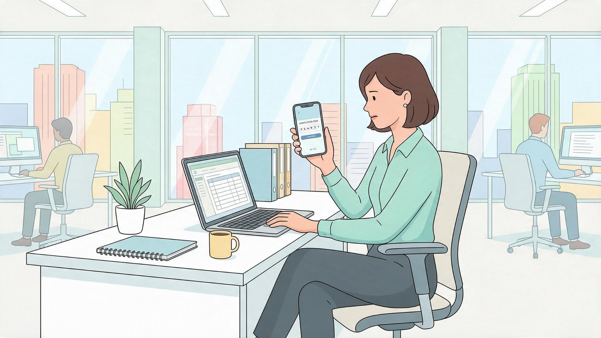

A senha é uma das principais formas de comprovar sua identidade em sistemas digitais.
Quando uma senha é fraca, previsível ou reutilizada, ela facilita o acesso indevido às contas e aos dados corporativos.
Criminosos podem testar combinações automaticamente, utilizar listas de palavras comuns ou aproveitar credenciais vazadas em outros serviços.
A reutilização é especialmente perigosa. Se uma senha pessoal também for usada no ambiente corporativo e aparecer em um vazamento externo, ela poderá ser testada contra a conta da empresa.
Prefira senhas longas e exclusivas. Evite nomes, datas de nascimento, sequências de teclado e informações pessoais fáceis de descobrir.
Gerenciadores de senhas aprovados pela organização ajudam a manter credenciais diferentes sem depender da memória para todas elas.
A autenticação multifator, também chamada MFA ou 2FA, adiciona uma verificação além da senha.
Assim, mesmo que a senha seja descoberta, o criminoso ainda precisará superar uma segunda etapa para acessar a conta.
Não reutilize sua senha corporativa em serviços pessoais. Não deixe credenciais anotadas em locais visíveis e nunca compartilhe códigos de autenticação com terceiros.
Ative o MFA sempre que estiver disponível.
Senha forte, exclusiva e combinada com MFA reduz significativamente o risco de acesso indevido.
Qual das seguintes opções representa a senha MAIS segura para uso corporativo?
Senhas fortes combinam frases longas, letras maiúsculas/minúsculas, números e símbolos especiais.
O que NUNCA deve ser feito em relação à sua senha corporativa?
Anotar senhas em papéis visíveis anula a segurança do controle de acesso no ambiente físico.
Por que reutilizar a mesma senha em sites pessoais e nos sistemas da empresa é um grande risco?
O reuso de senhas permite ataques do tipo Credential Stuffing em múltiplos serviços.
O que é a Autenticação Multi-Fator (MFA / 2FA)?
O MFA exige algo que você sabe (senha) e algo que você possui (aplicativo autenticador / token).